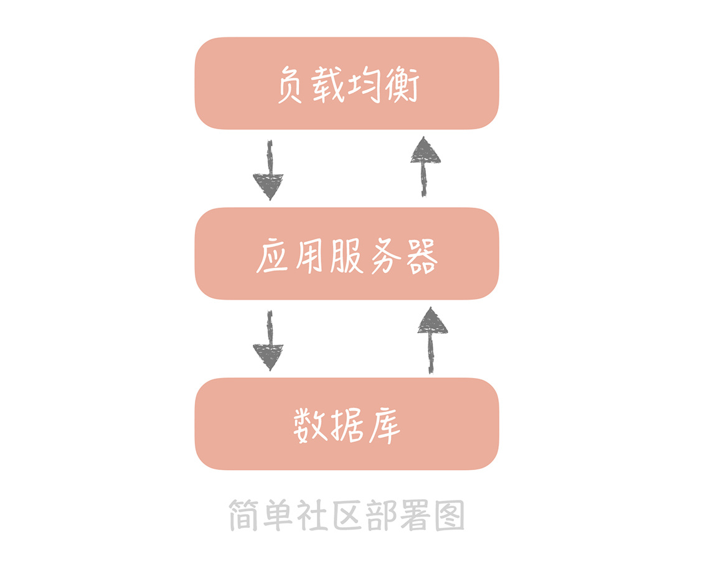
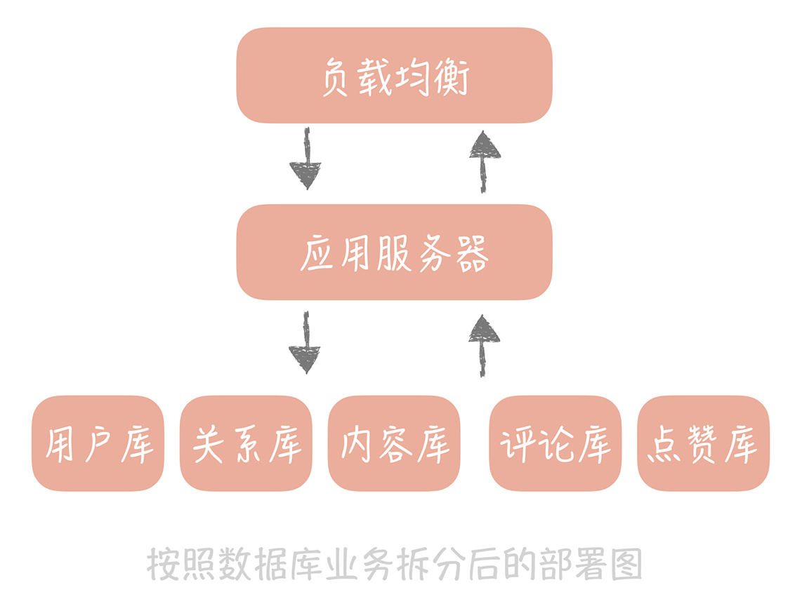
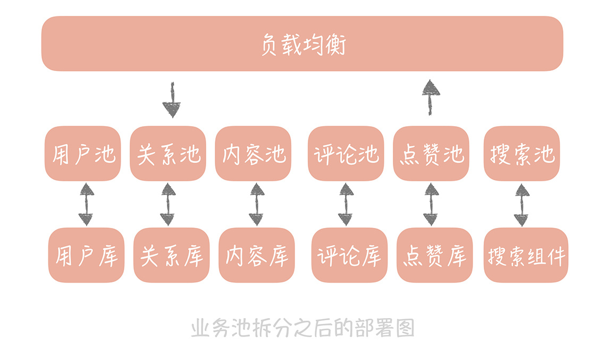
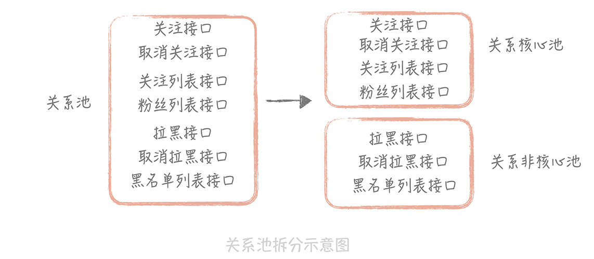

- 00 开篇词 为什么你要学习高并发系统设计？.md.html
- 01 高并发系统：它的通用设计方法是什么？.md.html
- 02 架构分层：我们为什么一定要这么做？.md.html
- 03 系统设计目标（一）：如何提升系统性能？.md.html
- 04 系统设计目标（二）：系统怎样做到高可用？.md.html
- 05 系统设计目标（三）：如何让系统易于扩展？.md.html
- 06 面试现场第一期：当问到组件实现原理时，面试官是在刁难你吗？.md.html
- 07 池化技术：如何减少频繁创建数据库连接的性能损耗？.md.html
- 08 数据库优化方案（一）：查询请求增加时，如何做主从分离？.md.html
- 09 数据库优化方案（二）：写入数据量增加时，如何实现分库分表？.md.html
- 10 发号器：如何保证分库分表后ID的全局唯一性？.md.html
- 11 NoSQL：在高并发场景下，数据库和NoSQL如何做到互补？.md.html
- 12 缓存：数据库成为瓶颈后，动态数据的查询要如何加速？.md.html
- 13 缓存的使用姿势（一）：如何选择缓存的读写策略？.md.html
- 14 缓存的使用姿势（二）：缓存如何做到高可用？.md.html
- 15 缓存的使用姿势（三）：缓存穿透了怎么办？.md.html
- 16 CDN：静态资源如何加速？.md.html
- 17 消息队列：秒杀时如何处理每秒上万次的下单请求？.md.html
- 18 消息投递：如何保证消息仅仅被消费一次？.md.html
- 19 消息队列：如何降低消息队列系统中消息的延迟？.md.html
- 20 面试现场第二期：当问到项目经历时，面试官究竟想要了解什么？.md.html
- 21 系统架构：每秒1万次请求的系统要做服务化拆分吗？.md.html
- 22 微服务架构：微服务化后，系统架构要如何改造？.md.html
- 23 RPC框架：10万QPS下如何实现毫秒级的服务调用？.md.html
- 24 注册中心：分布式系统如何寻址？.md.html
- 25 分布式Trace：横跨几十个分布式组件的慢请求要如何排查？.md.html
- 26 负载均衡：怎样提升系统的横向扩展能力？.md.html
- 27 API网关：系统的门面要如何做呢？.md.html
- 28 多机房部署：跨地域的分布式系统如何做？.md.html
- 29 Service Mesh：如何屏蔽服务化系统的服务治理细节？.md.html
- 30 给系统加上眼睛：服务端监控要怎么做？.md.html
- 31 应用性能管理：用户的使用体验应该如何监控？.md.html
- 32 压力测试：怎样设计全链路压力测试平台？.md.html
- 33 配置管理：成千上万的配置项要如何管理？.md.html
- 34 降级熔断：如何屏蔽非核心系统故障的影响？.md.html
- 35 流量控制：高并发系统中我们如何操纵流量？.md.html
- 36 面试现场第三期：你要如何准备一场技术面试呢？.md.html
- 37 计数系统设计（一）：面对海量数据的计数器要如何做？.md.html
- 38 计数系统设计（二）：50万QPS下如何设计未读数系统？.md.html
- 39 信息流设计（一）：通用信息流系统的推模式要如何做？.md.html
- 40 信息流设计（二）：通用信息流系统的拉模式要如何做？.md.html
- 加餐 数据的迁移应该如何做？.md.html
- 期中测试 10道高并发系统设计题目自测.md.html
- 用户故事 从“心”出发，我还有无数个可能.md.html
- 结束语 学不可以已.md.html
- 捐赠
05 系统设计目标（三）：如何让系统易于扩展？
从架构设计上来说，高可扩展性是一个设计的指标，它表示可以通过增加机器的方式来线性提高系统的处理能力，从而承担更高的流量和并发。
你可能会问：“在架构设计之初，为什么不预先考虑好使用多少台机器，支持现有的并发呢？”这个问题我在“[03 | 系统设计目标（一）：如何提升系统性能？]”一课中提到过，答案是峰值的流量不可控。
一般来说，基于成本考虑，在业务平稳期，我们会预留 30%～50% 的冗余以应对运营活动或者推广可能带来的峰值流量，但是当有一个突发事件发生时，流量可能瞬间提升到 2～3 倍甚至更高，我们还是以微博为例。
鹿晗和关晓彤互圈公布恋情，大家会到两个人的微博下面，或围观，或互动，微博的流量短时间内增长迅速，微博信息流也短暂出现无法刷出新的消息的情况。
那我们要如何应对突发的流量呢？架构的改造已经来不及了，最快的方式就是堆机器。不过我们需要保证，扩容了三倍的机器之后，相应的我们的系统也能支撑三倍的流量。有的人可能会产生疑问：“这不是显而易见的吗？很简单啊。”真的是这样吗？我们来看看做这件事儿难在哪儿。
为什么提升扩展性会很复杂
在上一讲中，我提到可以在单机系统中通过增加处理核心的方式，来增加系统的并行处理能力，但这个方式并不总生效。因为当并行的任务数较多时，系统会因为争抢资源而达到性能上的拐点，系统处理能力不升反降。
而对于由多台机器组成的集群系统来说也是如此。集群系统中，不同的系统分层上可能存在一些“瓶颈点”，这些瓶颈点制约着系统的横线扩展能力。这句话比较抽象，我举个例子你就明白了。
比方说，你系统的流量是每秒 1000 次请求，对数据库的请求量也是每秒 1000 次。如果流量增加 10 倍，虽然系统可以通过扩容正常服务，数据库却成了瓶颈。再比方说，单机网络带宽是 50Mbps，那么如果扩容到 30 台机器，前端负载均衡的带宽就超过了千兆带宽的限制，也会成为瓶颈点。那么，我们的系统中存在哪些服务会成为制约系统扩展的重要因素呢？
其实，无状态的服务和组件更易于扩展，而像 MySQL 这种存储服务是有状态的，就比较难以扩展。因为向存储集群中增加或者减少机器时，会涉及大量数据的迁移，而一般传统的关系型数据库都不支持。这就是为什么提升系统扩展性会很复杂的主要原因。
除此之外，从例子中你可以看到，我们需要站在整体架构的角度，而不仅仅是业务服务器的角度来考虑系统的扩展性 。所以说，数据库、缓存、依赖的第三方、负载均衡、交换机带宽等等都是系统扩展时需要考虑的因素。我们要知道系统并发到了某一个量级之后，哪一个因素会成为我们的瓶颈点，从而针对性地进行扩展。
针对这些复杂的扩展性问题，我提炼了一些系统设计思路，供你了解。
高可扩展性的设计思路
拆分是提升系统扩展性最重要的一个思路，它会把庞杂的系统拆分成独立的，有单一职责的模块。相对于大系统来说，考虑一个一个小模块的扩展性当然会简单一些。将复杂的问题简单化，这就是我们的思路。
但对于不同类型的模块，我们在拆分上遵循的原则是不一样的。我给你举一个简单的例子，假如你要设计一个社区，那么社区会有几个模块呢？可能有 5 个模块。
- 用户：负责维护社区用户信息，注册，登陆等；
- 关系：用户之间关注、好友、拉黑等关系的维护；
- 内容：社区发的内容，就像朋友圈或者微博的内容；
- 评论、赞：用户可能会有的两种常规互动操作；
- 搜索：用户的搜索，内容的搜索。
而部署方式遵照最简单的三层部署架构，负载均衡负责请求的分发，应用服务器负责业务逻辑的处理，数据库负责数据的存储落地。这时，所有模块的业务代码都混合在一起了，数据也都存储在一个库里。

1. 存储层的扩展性
无论是存储的数据量，还是并发访问量，不同的业务模块之间的量级相差很大，比如说成熟社区中，关系的数据量是远远大于用户数据量的，但是用户数据的访问量却远比关系数据要大。所以假如存储目前的瓶颈点是容量，那么我们只需要针对关系模块的数据做拆分就好了，而不需要拆分用户模块的数据。所以存储拆分首先考虑的维度是业务维度。
拆分之后，这个简单的社区系统就有了用户库、内容库、评论库、点赞库和关系库。这么做还能隔离故障，某一个库“挂了”不会影响到其它的数据库。

按照业务拆分，在一定程度上提升了系统的扩展性，但系统运行时间长了之后，单一的业务数据库在容量和并发请求量上仍然会超过单机的限制。这时，我们就需要针对数据库做第二次拆分。
这次拆分是按照数据特征做水平的拆分，比如说我们可以给用户库增加两个节点，然后按照某些算法将用户的数据拆分到这三个库里面，具体的算法我会在后面讲述数据库分库分表时和你细说。
水平拆分之后，我们就可以让数据库突破单机的限制了。但这里要注意，我们不能随意地增加节点，因为一旦增加节点就需要手动地迁移数据，成本还是很高的。所以基于长远的考虑，我们最好一次性增加足够的节点以避免频繁地扩容。
当数据库按照业务和数据维度拆分之后，我们尽量不要使用事务。因为当一个事务中同时更新不同的数据库时，需要使用二阶段提交，来协调所有数据库要么全部更新成功，要么全部更新失败。这个协调的成本会随着资源的扩展不断升高，最终达到无法承受的程度。
说完了存储层的扩展性，我们来看看业务层是如何做到易于扩展的。
2. 业务层的扩展性
我们一般会从三个维度考虑业务层的拆分方案，它们分别是：业务纬度，重要性纬度和请求来源纬度。
首先，我们需要把相同业务的服务拆分成单独的业务池，比方说上面的社区系统中，我们可以按照业务的维度拆分成用户池、内容池、关系池、评论池、点赞池和搜索池。
每个业务依赖独自的数据库资源，不会依赖其它业务的数据库资源。这样当某一个业务的接口成为瓶颈时，我们只需要扩展业务的池子，以及确认上下游的依赖方就可以了，这样就大大减少了扩容的复杂度。

除此之外，我们还可以根据业务接口的重要程度，把业务分为核心池和非核心池。打个比方，就关系池而言，关注、取消关注接口相对重要一些，可以放在核心池里面；拉黑和取消拉黑的操作就相对不那么重要，可以放在非核心池里面。这样，我们可以优先保证核心池的性能，当整体流量上升时优先扩容核心池，降级部分非核心池的接口，从而保证整体系统的稳定性。

最后，你还可以根据接入客户端类型的不同做业务池的拆分。比如说，服务于客户端接口的业务可以定义为外网池，服务于小程序或者 HTML5 页面的业务可以定义为 H5 池，服务于内部其它部门的业务可以定义为内网池，等等。
课程小结
本节课我带你了解了提升系统扩展性的复杂度以及系统拆分的思路。拆分看起来比较简单，可是什么时候做拆分，如何做拆分还是有很多细节考虑的。
未做拆分的系统虽然可扩展性不强，但是却足够简单，无论是系统开发还是运行维护都不需要投入很大的精力。拆分之后，需求开发需要横跨多个系统多个小团队，排查问题也需要涉及多个系统，运行维护上，可能每个子系统都需要有专人来负责，对于团队是一个比较大的考验。这个考验是我们必须要经历的一个大坎，需要我们做好准备。
© 2019 - 2023 Liangliang Lee. Powered by gin and hexo-theme-book.